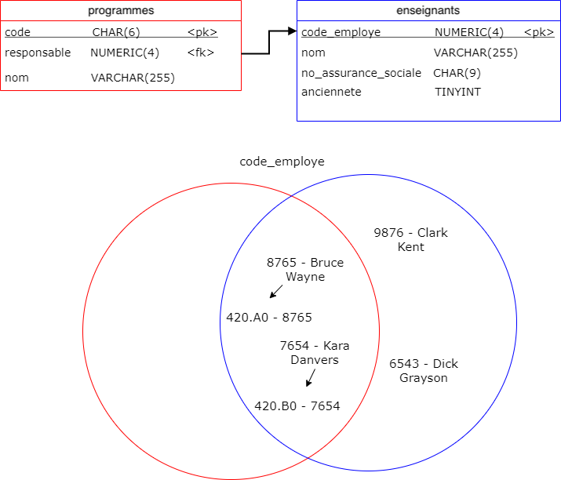
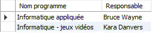
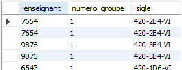
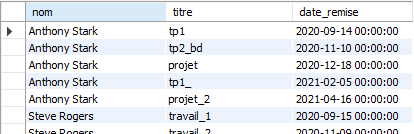
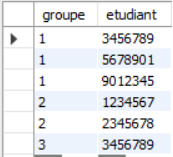
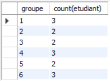
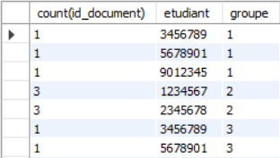
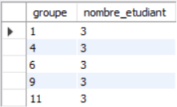

Jointures et agrégats
- Jointures internes
- Jointures naturelles
- Atelier
- Agrégats de données
- Atelier
Problème
Pour chaque programme, on veut afficher le nom du programme et le nom de la personne responsable. On aurait un résultat du format suivant
| Nom programme | Nom responsable |
|---|---|
| Informatique appliquée | Bruce Wayne |
| Informatique - Jeux Vidéo | Kara Danvers |
Le problème : nom programme et nom professeur sont dans deux tables différentes.
Relation Programme - Enseignant
erDiagram
enseignants ||--o{ programmes : " "
enseignants {
NUMERIC(8) code_employe
VARCHAR(255) nom
VARCHAR(255) prenom
NUMERIC(9) num_assurance_sociale
TINYINT anciennete
}
programmes {
INTEGER code PK
VARCHAR(255) nom
NUMERIC(8) prof_responsable FK
}Jointures
Une jointure permet de « joindre » deux tables ensemble pour en créer une seule. Ici la table résultant n'est pas une « vraie » table au sens où elle n'est pas enregistrée dans la base de données.
Il existe 3 types de jointures :
- Jointures internes et naturelles (vues en BD1)
- Jointures à gauche et à droite (vues en BD2)
- Jointures externes ou complètes (vues en BD2)
Jointures internes
Une jointure interne permet de récupérer les informations en croisant les informations de plusieurs tables.
On peut voir la jointure interne comme une intersection d'ensembles basé sur l'égalité d'une paire de colonnes.

Syntaxe des jointures internes
SELECT * FROM Nom_table_1 INNER JOIN Nom_table_2
ON Nom_table_1.colonne_1 = Nom_table_2.colonne_2;
Donc dans l'exemple précédent
SELECT programmes.nom, enseignants.nom FROM enseignants INNER JOIN programmes
ON enseignants.code_employe = programmes.prof_responsable;
On préfixe les colonnes des noms de table pour éviter les ambiguité de nom.
Allègement de l'écriture
Lorsqu'il n'y a pas de risque d'ambiguité de nom, on peut omettre le nom des tables comme préfixe. On peut aussi utiliser les alias pour clarifier le nom des colonnes.
SELECT programmes.nom AS 'Nom programme', enseignants.nom AS 'Responsable'
FROM enseignants INNER JOIN programmes
ON code_employe = prof_responsable;

--- Exercice 2.5.1 ---
Utiliser ecole2.sql pour répondre aux questions suivantes.
Diagramme :
erDiagram
enseignants ||--o{ programmes : "responsable"
enseignants {
NUMERIC(8) code_employe PK
VARCHAR(255) nom
NUMERIC(9) num_assurance_sociale
TINYINT anciennete
}
enseignants ||--o{ cours : "enseigne"
cours {
INTEGER cours_id PK
VARCHAR(255) nom
CHAR(10) sigle
TINYINT duree "=60"
TINYINT nombre_semaine "=15"
NUMERIC(8) enseignant FK
}
groupes ||--|{ cours : ""
groupes ||--|{ sessions : ""
groupes {
INTEGER groupe_id PK
INTEGER cours_id FK
VARCHAR(4) session_code FK
TINYINT numero_groupe
}
programmes {
CHAR(6) code_programme PK
VARCHAR(255) nom
NUMERIC(8) prof_responsable FK
}
etudiants }o--|| programmes : "est inscrit à"
etudiants {
NUMERIC(7) code_etudiant PK
VARCHAR(255) nom
YEAR annee_admission
CHAR(6) code_programme FK
}
sessions {
VARCHAR(4) session_code PK
VARCHAR(255) session_saison
DATE date_debut
DATE date_fin
}
etudiants ||--o{ inscriptions : ""
inscriptions }o--|| groupes : ""
inscriptions {
NUMERIC(7) code_etudiant PK
INTEGER groupe_id PK
}
evaluations }o--|| groupes : ""
evaluations {
INTEGER evaluation_id PK
INTEGER groupe_id FK
VARCHAR(255) nom_evaluation
NUMERIC(5_2) note_max
DATE date_evaluation
}
evaluations_etudiants }o--|| evaluations : ""
evaluations_etudiants {
NUMERIC(7) code_etudiant PK,FK
INTEGER evaluation_id PK,FK
DATE date_remise
VARCHAR(255) nom_document
NUMERIC(5_2) note
} A. Sélectionnez le nom de chaque étudiant et le nom du programme dans lequel il est inscrit. Triez les résultats par programme.
B. Pour chaque document de la table evaluations_etudiants, sélectionnez le nom du document, le nom de l'évaluation et le code de l'étudiant qui l'a remis.
Jointure naturelle
Une jointure naturelle est comme une jointure interne. Elle est plus simple à écrire mais nécessite obligatoirement que les colonnes à faire correspondre portent exactement le même nom.
ATTENTION : si plus d'une paire de colonne portent le même nom, alors la jointure naturelle vérifira que les deux paires concordent.
Syntaxe de la jointure naturelle :
SELECT * FROM Nom_table_1 NATURAL JOIN Nom_table_2;
On veut afficher le code d'employé et le sigle du cours pour chaque groupe.
SELECT enseignant, numero_groupe, sigle
FROM groupes NATURAL JOIN cours;

erDiagram
cours ||--o{ groupes : " "
cours {
INTEGER cours_id PK
NUMERIC(8) enseignant FK
CHAR(11) sigle
TINYINT duree "=60"
VARCHAR(255) nom
}
groupes {
INTEGER groupe_id PK
INTEGER session FK
INTEGER cours_id FK
NUMERIC(8) enseignant FK
TINYINT numero_groupe
}Problème
On veut afficher pour chaque étudiant son nom, le titre des documents qu'il a remis et la date à laquelle la remise s'est faite.
Quelle requête écrire ?
Jointures multiples
On peut appliquer une jointure sur le résultat d'une jointure.
SELECT cours.nom as 'Cours', evaluations.nom_evaluation as 'Titre évaluation' FROM cours
INNER JOIN groupes ON cours.cours_id = groupes.cours_id
INNER JOIN evaluations ON groupes.groupe_id = evaluations.groupe_id;

44 lignes ont été sélectionnées.
--- Exercice 2.5.2 ---
Diagramme :
erDiagram
enseignants ||--o{ programmes : "responsable"
enseignants {
NUMERIC(8) code_employe PK
VARCHAR(255) nom
NUMERIC(9) num_assurance_sociale
TINYINT anciennete
}
enseignants ||--o{ cours : "enseigne"
cours {
INTEGER cours_id PK
VARCHAR(255) nom
CHAR(10) sigle
TINYINT duree "=60"
TINYINT nombre_semaine "=15"
NUMERIC(8) enseignant FK
}
groupes ||--|{ cours : ""
groupes ||--|{ sessions : ""
groupes {
INTEGER groupe_id PK
INTEGER cours_id FK
VARCHAR(4) session_code FK
TINYINT numero_groupe
}
programmes {
CHAR(6) code_programme PK
VARCHAR(255) nom
NUMERIC(8) prof_responsable FK
}
etudiants }o--|| programmes : "est inscrit à"
etudiants {
NUMERIC(7) code_etudiant PK
VARCHAR(255) nom
YEAR annee_admission
CHAR(6) code_programme FK
}
sessions {
VARCHAR(4) session_code PK
VARCHAR(255) session_saison
DATE date_debut
DATE date_fin
}
etudiants ||--o{ inscriptions : ""
inscriptions }o--|| groupes : ""
inscriptions {
NUMERIC(7) code_etudiant PK
INTEGER groupe_id PK
}
evaluations }o--|| groupes : ""
evaluations {
INTEGER evaluation_id PK
INTEGER groupe_id FK
VARCHAR(255) nom_evaluation
NUMERIC(5_2) note_max
DATE date_evaluation
}
evaluations_etudiants }o--|| evaluations : ""
evaluations_etudiants {
NUMERIC(7) code_etudiant PK,FK
INTEGER evaluation_id PK,FK
DATE date_remise
VARCHAR(255) nom_document
NUMERIC(5_2) note
} A. Sélectionnez pour le cours de Programmation 2 le nom de tous les documents remis par les étudiants.
B. Trouvez la première année durant laquelle le cours portant le sigle 420-1B2-VI s'est donné.
Agrégats
Il est possible d’agréger des données ensemble. Un agrégat consiste à regrouper les données qui partagent une valeur commune pour une colonne précise. On fait un agrégat avec une clause GROUP BY.
On utilise généralement une fonction d'agrégation avec un agrégat pour obtenir des informations sur le groupe.
Il faut faire attention dans la sélection des colonnes pour n'afficher que des colonnes qui ont la même valeur pour tout le groupe.
Exemple
Sélectionner le nombre d'étudiant dans chaque groupe.
SELECT groupe_id, count(code_etudiant) FROM inscriptions
GROUP BY groupe_id;


--- Exercice 2.5.3 ---
A. Comptez le nombre d'évaluations pour chaque groupe. Affichez seulement l'id du groupe et le nombre d'évaluations.
B. Comptez le nombre de groupes pour chaque session. Affichez le nombre de groupe, la saison et le code de chaque session.
Agrégats multiples
Il est possible de former les agrégats par plusieurs critères. Par exemple, on souhaite obtenir le nombre de document remis pour chaque étudiant par groupe.
SELECT count(evaluations_etudiants.evaluation_id), groupe_id, code_etudiant FROM evaluations_etudiants
INNER JOIN evaluations ON evaluations_etudiants.evaluation_id = evaluations.evaluation_id
GROUP BY groupe_id, code_etudiant;

--- Exercice 2.5.4 ---
Sélectionnez pour chaque cours le nombre de fois qu'il s'est donné à chaque session (nombre de groupes). Affichez le semestre, l'année de la session ainsi que le sigle du cours. Triez les résultats par sigle.
Condition sur les groupes
Il est possible de mettre une condition sur un groupe. Une telle condition va dans une clause HAVING.
DINSTINCTION IMPORTANTE :
-
Une condition portant sur chaque enregistrement (avant agrégation) : WHERE
-
Une condition portant sur un agrégat de données (avec une fonction d'agrégation) : HAVING
Exemple
On veut les groupes de 3 étudiants et plus :
SELECT groupe_id, count(code_etudiant) FROM inscriptions
GROUP BY groupe_id
HAVING count(code_etudiant) >= 3;

Exemple : Alias
On peut utiliser les alias pour éviter de réécrire plusieurs fois le résultat d'une même fonction.
SELECT groupe_id, count(code_etudiant) AS nombre_etudiants FROM inscriptions
GROUP BY groupe
HAVING nombre_etudiants >= 3;
Note
le nom nombre_etudiants est inscrit tel quel sans guillemet, c'est pourquoi il est accessible. Avec des guillemets, cela aurait changé l'affichage, mais nous n'aurions pas pu l'utiliser dans la clause HAVING.
--- Exercice 2.5.5 ---
A. Sélectionnez le nombre de cours pour chaque session (session_code seulement) où il ne se donne pas plus de 2 cours;
B. Sélectionnez le nombre d'étudiants admis par année après 2019.
Sélection unique
Dans certains cas, en combinant les jointures avec les agrégats, on peut dupliquer des résultats.
Pour s'assurer que les résultats ne sont pas dupliquer, on doit utiliser le mot-clé DISTINCT. On peut utiliser le mot-clé de deux façons
-- Dans une requête SELECT pour avoir que les valeurs différentes
SELECT DISTINCT colonne
-- Dans la fonction count pour compter le nombre de valeurs distinctes
count(DISTINCT colonne)
--- Exercice 2.5.6 ---
Sélectionnez les sigles des cours ayant plus de 2 évaluations lorsqu'ils se sont donnés. Chaque sigle doit apparaître qu'une seule fois.